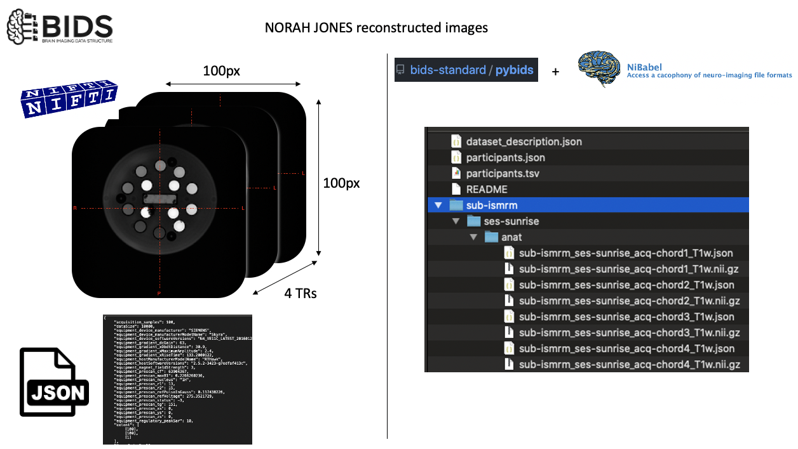
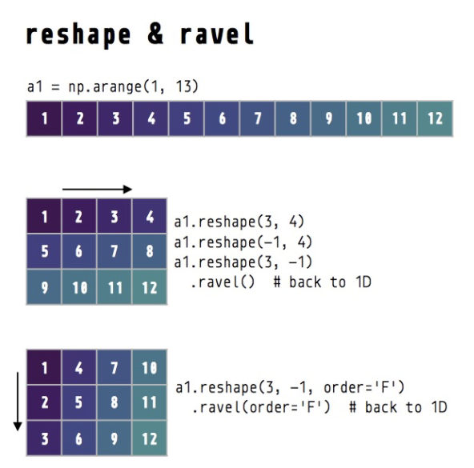
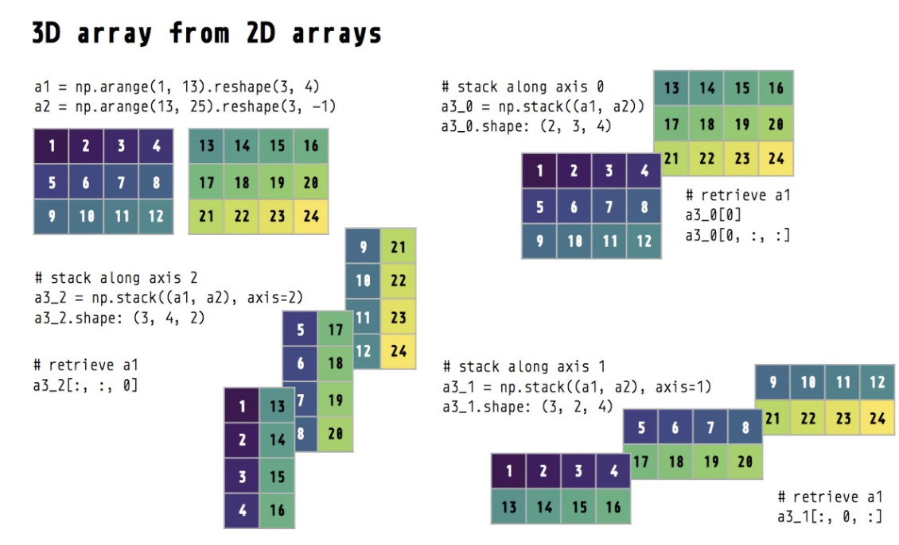

Import pybids to query BIDS-formatted data¶
from bids import BIDSLayout
import os
import numpy as np
# BIDS dataset is located at the Image folder
data_path = './Image'
Create a layout object¶
This object will enable us to make queries to fetch file names using subject IDs, modalities or using BIDS entity values such as chord1 as in acq-chord1.
However, it does not come with readers. To that end, we will use nibabel.
layout = BIDSLayout(data_path)
---------------------------------------------------------------------------
ValueError Traceback (most recent call last)
<ipython-input-3-afa1a2363772> in <module>
----> 1 layout = BIDSLayout(data_path)
~/opt/anaconda3/envs/jbnew/lib/python3.6/site-packages/bids/layout/layout.py in __init__(self, root, validate, absolute_paths, derivatives, config, sources, regex_search, database_path, reset_database, indexer, **indexer_kwargs)
134
135 # Validate that a valid BIDS project exists at root
--> 136 root, description = validate_root(root, validate)
137
138 self.root = root
~/opt/anaconda3/envs/jbnew/lib/python3.6/site-packages/bids/layout/validation.py in validate_root(root, validate)
66
67 if not os.path.exists(root):
---> 68 raise ValueError("BIDS root does not exist: %s" % root)
69
70 target = os.path.join(root, 'dataset_description.json')
ValueError: BIDS root does not exist: /Users/agah/Desktop/RTHDEV/Applications/norah_jones/content/Image
Import nibabel¶
This is a highly popular Python package for working with common neuroimaging file formats. You can see user documentation here.
import nibabel as nib
Fetch the nii image that belongs to the chord1 acquisition¶
Remember that we have 4 chords in Sunrise by Norah Jones. In the first notebook, we studied the sounds made by these different TRs in detail. Now it is time to see images generated while these notes were being played.
As there is not a BIDS entity for varying TRs, I used freeform acq entity to distinguish these files. As suffix, I used T1w, just for the sake of creating an example dataset.
sub-ismrm_ses-sunrise_acq-chord1_T1w.nii.gz
sub-ismrm_ses-sunrise_acq-chord2_T1w.nii.gz
sub-ismrm_ses-sunrise_acq-chord3_T1w.nii.gz
sub-ismrm_ses-sunrise_acq-chord4_T1w.nii.gz
'''
The [0] in the end is because layout.get returns a list, and we need a single entry to load data using nibabel.
'''
# You can imagine why this layout is useful for larger datasets
chord1 = layout.get(subject='ismrm', extension='nii.gz', suffix='T1w', return_type='file', acquisition='chord1')[0]
'''
You will see that chord1 is type Nifti1Image. It contains some information about affine transformation, data shape, orientation etc.
'''
chord1 = nib.load(chord1)
#chord1?
'''
To extract the "image part" of the Nifti, we need to use get_fdata() method of nibabel.
chord1_im is an ndarray.
'''
chord1_im = chord1.get_fdata()
import plotly.express as px
px.imshow(chord1_im,color_continuous_scale='viridis')
NumPy matrix operations¶
We already know how to manipulate arrays, but what about matrices?
Crop the matrix¶
As you noticed image is closer to the right side of the display plane. Let’s try cropping it first to center it.
chord1_im[row,col]
px.imshow(chord1_im[10:90,20:100],color_continuous_scale='viridis')
Looks good! Now, let’s transform this matrix into a 1D array, perform this cropping on that array and reshape it back to a 90X90 image.

To convert a matrix into an array (vectorization), we can use np.flatten(), which by default flattens matrices in row-major (C-style) order.
chord1_arry = chord1_im.flatten()
chord1_arry.shape
Crop the vectorized image (1D) at the same locations we cropped the matrix (chord1_im[10:90,20:100])¶
In row dimension, we omitted the first and last 10 elements from the matrix. To achieve this in an array, we need to drop 0th, 100th, 200th … elements from the array to begin with the rows… Dropping those elements would shift the array by 10 elements, now what about the ones at the end of each row… 🤯 But wait… Do we need to actully think about this? Of course not!
That’s when we can use np.meshgrid and numpy.ravel_multi_index methods.
'''
This should create a (2,80,80) matrix. The first matrix (xy_idx[0,:,:]) stores the row, and the second
one stores the column indexes corresponding to the slicing by [10:90,20:100].
IMPORTANT:
Axis corrdinates vs matrix coordinates.
We pass indexing='ij' argument for NumPy NOT TO transpose our matrix. Documentation reads:
In the 2-D case with inputs of length M and N, the outputs are of shape (N, M) for ‘xy’ indexing
and (M, N) for ‘ij’ indexing.
'''
xy_idx = np.array(np.meshgrid(np.arange(10,90),np.arange(20,100),indexing='ij'))
# Here, we find "linear (flattened) indexes of our 2D slice"
lin_idx = np.ravel_multi_index([xy_idx[0,:,:],xy_idx[1,:,:]], (100,100)).flatten()
# Take elements indexed by lin_idx from the flattened image
cropped = chord1_arry[lin_idx]
# Reshape cropped image (80,80)
cropped = cropped.reshape(80,80)
# Display the image
px.imshow(cropped,color_continuous_scale='viridis')
'''
To prove ourselves we did the right thing, let's subtract matrix-cropped and array-corrped
images from each other and display them.
TASK:
Now try the same thing after dropping indexing='ij' argument from the np.meshgrid function.
'''
dif = chord1_im[10:90,20:100] - cropped
px.imshow(dif,color_continuous_scale='viridis')
If you are wondering why I tortured you with linearized indexing as the first 2D example, I have a great blog post suggestion for you: Look Ma, No For-Loops: Array Programming With NumPy¶
When it comes to computation, there are really three concepts that lend NumPy its power:
Vectorization
Broadcasting
Indexing
Now you know vectorization and how to map matrix indexes onto linearized indexes. To go from linear to vector indexes, you can use np.unravel_index.
We already know broadcasting and indexing from the first notebook. Looks like you know how to make the most out of NumPy now!
The Rolling Phantom¶
We will rotate our image by 10 degrees 36 times, and stack those images together to create an animation using Plotly :)
from scipy import ndimage, misc
# Let's work with the cropped image
chord1_im = chord1_im = chord1.get_fdata()[10:90,20:100]
# This is how you can rotate an image by 30 degrees
img_rot = ndimage.rotate(chord1_im, 30,reshape=False)
px.imshow(img_rot,color_continuous_scale='viridis')
frames = []
for rot in np.arange(10,360,10):
cur = ndimage.rotate(chord1_im,rot,reshape=False)
frames.append(cur/cur.max())
frames = np.array(frames)
frames.shape
px.imshow(frames,color_continuous_scale='viridis', animation_frame=0,template='plotly_dark')

In the example above, we initialized a list (frames) to create a collection of 2D image stacks in a Python list, then we used np.array() create a numpy object of it. This approach works fairly well. Depending on the dimension orders you want, you can use np.reshape:
frames_reshaped = frames.reshape([80,35,80])
frames_reshaped.shape
NumPy also provides some functions to stack array/matrix data.
def get_chord_im(acq_val):
chord = layout.get(subject='ismrm', extension='nii.gz', suffix='T1w', return_type='file', acquisition=acq_val)[0]
chord = nib.load(chord)
chord_im = chord.get_fdata()
return chord_im
chord1 = get_chord_im('chord1')
chord2 = get_chord_im('chord2')
chord3 = get_chord_im('chord3')
chord4 = get_chord_im('chord4')
ch12_dim0 = np.stack((chord1, chord2))
ch12_dim1 = np.stack((chord1, chord2), axis=1)
ch12_dim2 = np.stack((chord1, chord2), axis=2)
# You can define along which axis the images will be stacked
print('Default np.stack axis: ', ch12_dim0.shape,
'\nnp.stack axis=1: ', ch12_dim1.shape,
'\nnp.stack axis=2: ', ch12_dim2.shape,
)
# Stack all chord images using np.dstack on the last axis
stack = np.dstack((chord1, chord2, chord3, chord4))
stack.shape
Mark each sphere’s center manually & plot how intensity changes across TRs¶
import plotly.graph_objects as go
# Define sphere point locations
# I listed these points by hovering over the image. Note that x and y locations
# displayed on hover must be transposed while slicing the matrix. Again, axis coordinates
# vs matrix coordinates.
sphere_centers = {"x": [39,43,53,66,76,80,76,66,54,43], "y": [51,63,70,70,62,50,40,31,31,39],"T1":["T1: 1989ms","T1: 1454ms","T1: 984ms","T1: 706ms","T1: 496ms","T1: 351ms","T1: 247ms","T1: 175ms","T1: 125ms","T1: 89ms"]}
fig = px.imshow(stack,color_continuous_scale='viridis', animation_frame=2,template='plotly_dark')
fig.add_trace(go.Scatter(x=sphere_centers['x'],y=sphere_centers['y'],text=sphere_centers['T1'],mode='markers',marker=dict(color='white')))
# This is how we simply slice our stack to see signal change across 4 TRs in 10 spheres
# Pay attention to the order of x and y
signal_vs_tr = stack[sphere_centers['y'],sphere_centers['x'],:]
signal_vs_tr.shape
Read metadata using BIDS layout & json to extract TRs¶
import json
TRs = list()
for acq_val in ['chord1','chord2','chord3','chord4']:
f = open(layout.get(subject='ismrm', extension='json', suffix='T1w', return_type='file', acquisition=acq_val)[0],)
cur_meta = json.load(f)
f.close()
TRs.append(cur_meta['mri_RepetitionTime'])
TRs = np.array(TRs)
print('TRs are: ', TRs)
# Sort them and obtain sorted idxs (ASCENDING ORDER)
sort_index = np.argsort(TRs)
sorted_TR = np.sort(TRs)
print('Sort idxs are: ', sort_index)
print('Sorted TRs are: ', sorted_TR)
import pandas as pd
# List comprehension is a powerful python feature.
# Here, we use it to create a string for tagging pandas dataframe colums
# with the respective TRs.
trlist = ["TR:" + s for s in sorted_TR.astype(str)]
# Using the sort index, we are re-arranging the order of intensity values.
result=[signal_vs_tr[:,i] for i in sort_index]
# Create a numpy object
result = np.array(result)
# Convert numpy matrix's transpose into a pandas dataframe
df = pd.DataFrame(result.T, columns = trlist)
df["Spheres"] = ['S1','S2','S3','S4','S5','S6','S7','S8','S9','S10']
df["T1ms"] = sphere_centers["T1"]
df
fig = px.line(df,x="Spheres",y=["TR:9.6","TR:12.9","TR:13.1","TR:14.45"],template='plotly_dark',hover_name="T1ms")
fig.update_layout(hovermode="x unified")
fig